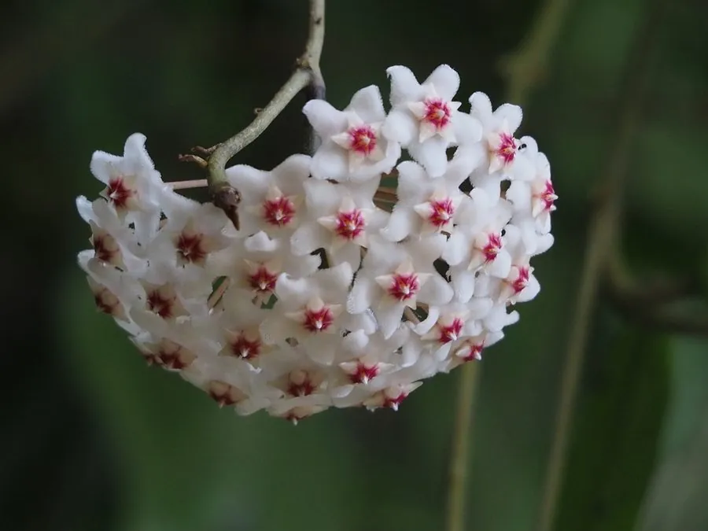

花卉与草本 · 植物界
球兰 Hoya carnosa

夹竹桃科球兰属肉质藤本，花序呈球状、花冠蜡质如玉，夜间散发甜香并分泌花蜜，是室内常见的垂吊花卉。
- 分类
- 门被子植物门纲木兰纲目龙胆目科夹竹桃科属球兰属
- 栖息环境
- 热带亚热带林下附生，喜温暖湿润半阴
- 地理分布
- 中国华南、台湾；东南亚、澳大利亚等地
- 保护级别
- 暂无评估；未被列入国家重点保护野生植物名录
物种志
球兰为夹竹桃科球兰属肉质藤本，茎肉质、攀援或下垂，节上生气生根。叶片对生，肉质，卵形至椭圆形，表面深绿有光泽，有时带白色斑纹。花组成腋生的伞形花序，呈球形，花冠蜡质，白色至淡粉色，花心紫红色，花期四月至六月，夜间散发甜香；蓇葖果细长，成熟时开裂，种子具毛，果期秋季。
球兰原产中国华南、台湾以及东南亚、澳大利亚等地，常附生于树上或岩石上。它喜温暖湿润和半阴环境，忌强光直射，适宜疏松透气、排水良好的基质，不耐寒。花如蜡质小球、香气清甜，是室内垂吊和阳台绿化的优良植物；花序凋谢后不要剪去花梗，翌年可在同一花梗上再次开花。栽培中需控制浇水，避免烂根。
形态与习性
- 株高肉质藤本，茎长可达 2 m
- 花期4–6 月，花序球形
- 果期秋季，蓇葖果细长
- 光照喜半阴，忌强光直射
- 水分喜湿润，忌积水烂根
- 土壤疏松透气的附生基质
- 主要用途室内垂吊、阳台攀援观赏
趣味知识
- 球兰的花冠蜡质光亮，像用蜡捏成的小星星，因此又名蜡兰。
- 它的花序在夜间香气最浓，并会分泌晶莹的花蜜。
- 球兰的花梗不能剪掉，因为翌年的花芽仍会从同一花梗上长出。